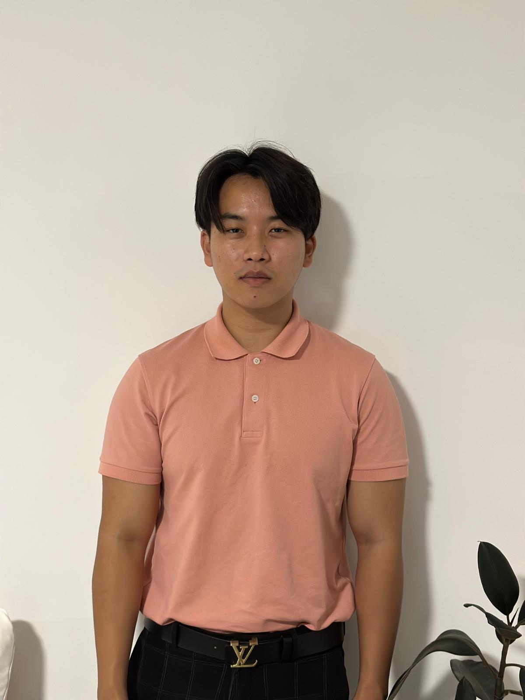

Jimba Tenzin

Summary
Final-year Master of Applied Information Technology student at Victoria University, Brisbane, graduating in September 2025, with a proven blend of academic excellence and hands-on project experience. Backed by a strong 6.0 GPA, I have a record of successfully delivering innovative projects such as a Smart Water Management System and the award-winning VU Calendar App (Block Star Award, Advanced Project unit). My technical expertise spans Python, Packet Tracer, AWS, and more, underscored by top marks in Cloud Security and Network Systems. I bring exceptional research, problem-solving, and communication skills complemented by real-world customer service experience as a Sales Associate at Koala Living. Eager to launch a career in IT within Networking and Cloud environments, I am ready to contribute to dynamic teams and drive forward-thinking tech solution
Education:
- Master of Applied Information Technology,Victoria University 2025
- Bachelors of Electronics and Communication Engineering , Royal University Of Bhutan 2020
Work experience:
- Sales Assocaite - Koala Living 2023- Present
- Assist customers in selecting premium furniture and home décor, providing personalized recommendations based on Individual needs and style preferences.
- Manage sales transactions, inventory restocking, and store presentation while delivering exceptional customer service.
- Maintain a strong understanding of product range and promotions to meet and exceed sales targets.
- Owner and Personal trainer -Gymba Fitness - 2022-2023
- Founded and operated a gym in Bhutan after completing a certified Personal Trainer course from Fitness Innovation Thailand.
- Conducted group fitness classes and one-on-one training sessions focused on strength, conditioning, and overall well-being.
- Developed personalized fitness programs tailored to individual client goals.
- Owner-Digitonics 2021-2022
- Launched an online store to help university students find suitable laptops and tech products based on their academic and technical requirements.
- Collaborated with vendors from Thailand and India to source laptops and accessories at competitive prices
- Offered personalized consultations, technical guidance, and post-purchase support
Skills:
- HTML
- CSS
- Cisco Packet Tracer
- Project Management
- AWS
- Customer service
- Time Management
- Python
Achievements:
- Block star for Advanced Project - 2024
- Student Council member-2024
- Class Representative -2020
- 1st in Green Technology challenge on “low-cost power Generation of household electronics”-2019
- 1st in Inter school Chess championship - 2013
- 1st Runners up in Regional Chess championship - 2014
- Radio club member 2015-2020
Other